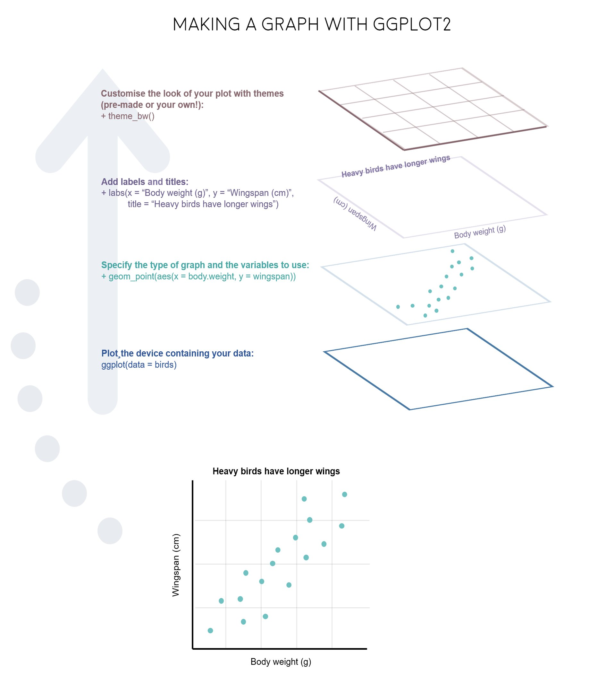

第 19 章 ggplot2之几何形状
采菊东篱下，悠然见南山。
根据大家投票，觉得ggplot2是最想掌握的技能，我想这就是R语言中最有质感的部分吧。所以，这里专门拿出一节课讲ggplot2，也算是补上之前第 18 章数据可视化没讲的内容。
19.1 一个有趣的案例
先看一组数据
df <- read_csv("./demo_data/datasaurus.csv")## Rows: 1846 Columns: 3
## ── Column specification ────────────────────────────────────────────────────────
## Delimiter: ","
## chr (1): dataset
## dbl (2): x, y
##
## ℹ Use `spec()` to retrieve the full column specification for this data.
## ℹ Specify the column types or set `show_col_types = FALSE` to quiet this message.
df## # A tibble: 1,846 × 3
## dataset x y
## <chr> <dbl> <dbl>
## 1 dino 55.4 97.2
## 2 dino 51.5 96.0
## 3 dino 46.2 94.5
## 4 dino 42.8 91.4
## 5 dino 40.8 88.3
## 6 dino 38.7 84.9
## 7 dino 35.6 79.9
## 8 dino 33.1 77.6
## 9 dino 29.0 74.5
## 10 dino 26.2 71.4
## # ℹ 1,836 more rows先用dataset分组后，然后计算每组下x的均值和方差，y的均值和方差，以及x，y两者的相关系数。
df %>%
group_by(dataset) %>%
summarize(
mean_x = mean(x),
mean_y = mean(y),
std_dev_x = sd(x),
std_dev_y = sd(y),
corr_x_y = cor(x, y)
)## # A tibble: 13 × 6
## dataset mean_x mean_y std_dev_x std_dev_y corr_x_y
## <chr> <dbl> <dbl> <dbl> <dbl> <dbl>
## 1 away 54.3 47.8 16.8 26.9 -0.0641
## 2 bullseye 54.3 47.8 16.8 26.9 -0.0686
## 3 circle 54.3 47.8 16.8 26.9 -0.0683
## 4 dino 54.3 47.8 16.8 26.9 -0.0645
## 5 dots 54.3 47.8 16.8 26.9 -0.0603
## 6 h_lines 54.3 47.8 16.8 26.9 -0.0617
## 7 high_lines 54.3 47.8 16.8 26.9 -0.0685
## 8 slant_down 54.3 47.8 16.8 26.9 -0.0690
## 9 slant_up 54.3 47.8 16.8 26.9 -0.0686
## 10 star 54.3 47.8 16.8 26.9 -0.0630
## 11 v_lines 54.3 47.8 16.8 26.9 -0.0694
## 12 wide_lines 54.3 47.8 16.8 26.9 -0.0666
## 13 x_shape 54.3 47.8 16.8 26.9 -0.0656可视化是数据探索中非常重要的部分。本章的目的就是带领大家学习ggplot2基本的绘图技能。
19.2 学习目标
19.2.1 图形语法
图形语法 “grammar of graphics” (“ggplot2” 中的gg 就来源于此) 使用图层(layer)去描述和构建图形，下图是ggplot2图层概念的示意图

19.2.2 图形部件
一张统计图形就是从数据到几何形状(geometric object，缩写geom)所包含的图形属性(aesthetic attribute，缩写aes)的一种映射。
data: 数据框data.frame (注意，不支持向量vector和列表list类型）-
aes: 数据框中的数据变量映射到图形属性。什么叫图形属性？就是图中点的位置、形状，大小，颜色等眼睛能看到的东西。什么叫映射？就是一种对应关系，比如数学中的函数b = f(a)就是a和b之间的一种映射关系,a的值决定或者控制了b的值，在ggplot2语法里，a就是我们输入的数据变量，b就是图形属性， 这些图形属性包括：- x（x轴方向的位置）
- y（y轴方向的位置）
- color（点或者线等元素的颜色）
- size（点或者线等元素的大小）
- shape（点或者线等元素的形状）
- alpha（点或者线等元素的透明度）
-
geoms: 几何形状，确定我们想画什么样的图，一个geom_***确定一种形状。更多几何形状推荐阅读这里


-
stats: 统计变换 -
scales: 标度 -
coord: 坐标系统 -
facet: 分面 -
layer： 增加图层 -
theme: 主题风格 -
save: 保存图片

图 19.2: ggplot2语法
19.3 开始
R语言数据类型，有字符串型、数值型、因子型、逻辑型、日期型等。 ggplot2会将字符串型、因子型、逻辑型默认为离散变量，而数值型默认为连续变量，将日期时间为日期变量：
-
离散变量: 字符串型
, 因子型 , 逻辑型 -
连续变量: 双精度数值
, 整数数值 -
日期变量: 日期
, 时间
我们在呈现数据的时候，可能会同时用到多种类型的数据，比如
-
一个离散
-
一个连续
-
两个离散
-
两个连续
-
一个离散, 一个连续
-
三个连续
19.3.1 导入数据
gapdata <- read_csv("./demo_data/gapminder.csv")## Rows: 1704 Columns: 6
## ── Column specification ────────────────────────────────────────────────────────
## Delimiter: ","
## chr (2): country, continent
## dbl (4): year, lifeExp, pop, gdpPercap
##
## ℹ Use `spec()` to retrieve the full column specification for this data.
## ℹ Specify the column types or set `show_col_types = FALSE` to quiet this message.
gapdata## # A tibble: 1,704 × 6
## country continent year lifeExp pop gdpPercap
## <chr> <chr> <dbl> <dbl> <dbl> <dbl>
## 1 Afghanistan Asia 1952 28.8 8425333 779.
## 2 Afghanistan Asia 1957 30.3 9240934 821.
## 3 Afghanistan Asia 1962 32.0 10267083 853.
## 4 Afghanistan Asia 1967 34.0 11537966 836.
## 5 Afghanistan Asia 1972 36.1 13079460 740.
## 6 Afghanistan Asia 1977 38.4 14880372 786.
## 7 Afghanistan Asia 1982 39.9 12881816 978.
## 8 Afghanistan Asia 1987 40.8 13867957 852.
## 9 Afghanistan Asia 1992 41.7 16317921 649.
## 10 Afghanistan Asia 1997 41.8 22227415 635.
## # ℹ 1,694 more rows19.4 基本绘图
19.4.1 柱状图
常用于一个离散变量


# geom_bar vs stat_count
gapdata %>%
ggplot(aes(x = continent)) +
stat_count()
## # A tibble: 5 × 2
## continent n
## <chr> <int>
## 1 Africa 624
## 2 Americas 300
## 3 Asia 396
## 4 Europe 360
## 5 Oceania 24可见，geom_bar() 自动完成了这个统计，更多geom与stat对应关系见这里

我个人比较喜欢先统计，然后画图
19.4.2 直方图
常用于一个连续变量
gapdata %>%
ggplot(aes(x = lifeExp)) +
geom_histogram() # corresponding to stat_bin()## `stat_bin()` using `bins = 30`. Pick better value with `binwidth`.
gapdata %>%
ggplot(aes(x = lifeExp)) +
geom_histogram(binwidth = 1)geom_histograms(), 默认使用 position = "stack"
gapdata %>%
ggplot(aes(x = lifeExp, fill = continent)) +
geom_histogram()## `stat_bin()` using `bins = 30`. Pick better value with `binwidth`.也可以指定 position = "identity"
gapdata %>%
ggplot(aes(x = lifeExp, fill = continent)) +
geom_histogram(position = "identity")## `stat_bin()` using `bins = 30`. Pick better value with `binwidth`.
19.4.3 频次图
gapdata %>%
ggplot(aes(x = lifeExp, color = continent)) +
geom_freqpoly()## `stat_bin()` using `bins = 30`. Pick better value with `binwidth`.19.4.4 密度图
#' smooth histogram = density plot
gapdata %>%
ggplot(aes(x = lifeExp)) +
geom_density()
如果不喜欢下面那条线，可以这样
geom_density() 中adjust 用于调节bandwidth, adjust = 1/2 means use half of the default bandwidth.
gapdata %>%
ggplot(aes(x = lifeExp)) +
geom_density(adjust = 1)
gapdata %>%
ggplot(aes(x = lifeExp)) +
geom_density(adjust = 0.2)
gapdata %>%
ggplot(aes(x = lifeExp, color = continent)) +
geom_density()
gapdata %>%
ggplot(aes(x = lifeExp, fill = continent)) +
geom_density(alpha = 0.2)
gapdata %>%
filter(continent != "Oceania") %>%
ggplot(aes(x = lifeExp, fill = continent)) +
geom_density(alpha = 0.2)
直方图和密度图画在一起。注意y = stat(density)表示y是由x新生成的变量，这是一种固定写法，类似的还有stat(count), stat(level)
gapdata %>%
filter(continent != "Oceania") %>%
ggplot(aes(x = lifeExp, y = stat(density))) +
geom_histogram(aes(fill = continent)) +
geom_density() ## Warning: `stat(density)` was deprecated in ggplot2 3.4.0.
## ℹ Please use `after_stat(density)` instead.
## This warning is displayed once every 8 hours.
## Call `lifecycle::last_lifecycle_warnings()` to see where this warning was
## generated.## `stat_bin()` using `bins = 30`. Pick better value with `binwidth`.
19.4.5 箱线图
一个离散变量 + 一个连续变量，思考下结果为什么是这样？
gapdata %>%
ggplot(aes(x = year, y = lifeExp)) +
geom_boxplot()## Warning: Continuous x aesthetic
## ℹ did you forget `aes(group = ...)`?数据框中的year变量是数值型，需要先转换成因子型，弄成离散型变量
gapdata %>%
ggplot(aes(x = as.factor(year), y = lifeExp)) +
geom_boxplot()
明确指定分组变量
gapdata %>%
ggplot(aes(x = year, y = lifeExp)) +
geom_boxplot(aes(group = year))
gapdata %>%
ggplot(aes(x = year, y = lifeExp)) +
geom_violin(aes(group = year)) +
geom_jitter(alpha = 1 / 4) +
geom_smooth(se = FALSE)## `geom_smooth()` using method = 'gam' and formula = 'y ~ s(x, bs = "cs")'19.4.6 抖散图
点重叠的处理方案
gapdata %>%
ggplot(aes(x = continent, y = lifeExp)) +
geom_point()
gapdata %>%
ggplot(aes(x = continent, y = lifeExp)) +
geom_jitter()
gapdata %>%
ggplot(aes(x = continent, y = lifeExp)) +
geom_boxplot()
gapdata %>%
ggplot(aes(x = continent, y = lifeExp)) +
geom_boxplot() +
geom_jitter()
gapdata %>%
ggplot(aes(x = continent, y = lifeExp)) +
geom_jitter() +
stat_summary(fun.y = median, colour = "red", geom = "point", size = 5)## Warning: The `fun.y` argument of `stat_summary()` is deprecated as of ggplot2 3.3.0.
## ℹ Please use the `fun` argument instead.
## This warning is displayed once every 8 hours.
## Call `lifecycle::last_lifecycle_warnings()` to see where this warning was
## generated.
gapdata %>%
ggplot(aes(reorder(x = continent, lifeExp), y = lifeExp)) +
geom_jitter() +
stat_summary(fun.y = median, colour = "red", geom = "point", size = 5)
注意到我们已经提到过 stat_count / stat_bin / stat_summary
gapdata %>%
ggplot(aes(x = continent, y = lifeExp)) +
geom_violin(
trim = FALSE,
alpha = 0.5
) +
stat_summary(
fun.y = mean,
fun.ymax = function(x) {
mean(x) + sd(x)
},
fun.ymin = function(x) {
mean(x) - sd(x)
},
geom = "pointrange"
)## Warning: The `fun.ymin` argument of `stat_summary()` is deprecated as of ggplot2 3.3.0.
## ℹ Please use the `fun.min` argument instead.
## This warning is displayed once every 8 hours.
## Call `lifecycle::last_lifecycle_warnings()` to see where this warning was
## generated.## Warning: The `fun.ymax` argument of `stat_summary()` is deprecated as of ggplot2 3.3.0.
## ℹ Please use the `fun.max` argument instead.
## This warning is displayed once every 8 hours.
## Call `lifecycle::last_lifecycle_warnings()` to see where this warning was
## generated.
19.4.7 山峦图
常用于一个离散变量 + 一个连续变量
gapdata %>%
ggplot(aes(
x = lifeExp,
y = continent,
fill = continent
)) +
ggridges::geom_density_ridges()## Picking joint bandwidth of 2.23
# https://learnui.design/tools/data-color-picker.html#palette
gapdata %>%
ggplot(aes(
x = lifeExp,
y = continent,
fill = continent
)) +
ggridges::geom_density_ridges() +
scale_fill_manual(
values = c("#003f5c", "#58508d", "#bc5090", "#ff6361", "#ffa600")
)## Picking joint bandwidth of 2.23
gapdata %>%
ggplot(aes(
x = lifeExp,
y = continent,
fill = continent
)) +
ggridges::geom_density_ridges() +
scale_fill_manual(
values = colorspace::sequential_hcl(5, palette = "Peach")
)## Picking joint bandwidth of 2.23
19.4.8 散点图
常用于两个连续变量
gapdata %>%
ggplot(aes(x = gdpPercap, y = lifeExp)) +
geom_point()
gapdata %>%
ggplot(aes(x = log(gdpPercap), y = lifeExp)) +
geom_point()
gapdata %>%
ggplot(aes(x = gdpPercap, y = lifeExp)) +
geom_point() +
scale_x_log10() # A better way to log transform
gapdata %>%
ggplot(aes(x = gdpPercap, y = lifeExp)) +
geom_point(aes(color = continent))
gapdata %>%
ggplot(aes(x = gdpPercap, y = lifeExp)) +
geom_point(alpha = (1 / 3), size = 2)
gapdata %>%
ggplot(aes(x = gdpPercap, y = lifeExp)) +
geom_point() +
geom_smooth()## `geom_smooth()` using method = 'gam' and formula = 'y ~ s(x, bs = "cs")'
gapdata %>%
ggplot(aes(x = gdpPercap, y = lifeExp)) +
geom_point() +
geom_smooth(lwd = 3, se = FALSE)## `geom_smooth()` using method = 'gam' and formula = 'y ~ s(x, bs = "cs")'
gapdata %>%
ggplot(aes(x = gdpPercap, y = lifeExp)) +
geom_point() +
geom_smooth(lwd = 3, se = FALSE, method = "lm")## `geom_smooth()` using formula = 'y ~ x'
gapdata %>%
ggplot(aes(x = gdpPercap, y = lifeExp, color = continent)) +
geom_point() +
geom_smooth(lwd = 3, se = FALSE, method = "lm")## `geom_smooth()` using formula = 'y ~ x'
jCountries <- c("Canada", "Rwanda", "Cambodia", "Mexico")
gapdata %>%
filter(country %in% jCountries) %>%
ggplot(aes(x = year, y = lifeExp, color = country)) +
geom_line() +
geom_point()
gapdata %>%
filter(country %in% jCountries) %>%
ggplot(aes(
x = year, y = lifeExp,
color = reorder(country, -1 * lifeExp, max)
)) +
geom_line() +
geom_point()
这是一种技巧，但我更推荐以下方法
d1 <- gapdata %>%
filter(country %in% jCountries) %>%
group_by(country) %>%
mutate(end_label = if_else(year == max(year), country, NA_character_))
d1## # A tibble: 48 × 7
## # Groups: country [4]
## country continent year lifeExp pop gdpPercap end_label
## <chr> <chr> <dbl> <dbl> <dbl> <dbl> <chr>
## 1 Cambodia Asia 1952 39.4 4693836 368. <NA>
## 2 Cambodia Asia 1957 41.4 5322536 434. <NA>
## 3 Cambodia Asia 1962 43.4 6083619 497. <NA>
## 4 Cambodia Asia 1967 45.4 6960067 523. <NA>
## 5 Cambodia Asia 1972 40.3 7450606 422. <NA>
## 6 Cambodia Asia 1977 31.2 6978607 525. <NA>
## 7 Cambodia Asia 1982 51.0 7272485 624. <NA>
## 8 Cambodia Asia 1987 53.9 8371791 684. <NA>
## 9 Cambodia Asia 1992 55.8 10150094 682. <NA>
## 10 Cambodia Asia 1997 56.5 11782962 734. <NA>
## # ℹ 38 more rows
d1 %>% ggplot(aes(
x = year, y = lifeExp, color = country
)) +
geom_line() +
geom_point() +
geom_label(aes(label = end_label)) +
theme(legend.position = "none")## Warning: Removed 44 rows containing missing values (`geom_label()`).
如果觉得麻烦，就用gghighlight宏包吧
gapdata %>%
filter(country %in% jCountries) %>%
ggplot(aes(
x = year, y = lifeExp, color = country
)) +
geom_line() +
geom_point() +
gghighlight::gghighlight()## label_key: country
19.4.9 点线图
gapdata %>%
filter(continent == "Asia" & year == 2007) %>%
ggplot(aes(x = lifeExp, y = country)) +
geom_point()
gapdata %>%
filter(continent == "Asia" & year == 2007) %>%
ggplot(aes(
x = lifeExp,
y = reorder(country, lifeExp)
)) +
geom_point(color = "blue", size = 2) +
geom_segment(aes(
x = 40,
xend = lifeExp,
y = reorder(country, lifeExp),
yend = reorder(country, lifeExp)
),
color = "lightgrey"
) +
labs(
x = "Life Expectancy (years)",
y = "",
title = "Life Expectancy by Country",
subtitle = "GapMinder data for Asia - 2007"
) +
theme_minimal() +
theme(
panel.grid.major = element_blank(),
panel.grid.minor = element_blank()
)19.4.10 分面
如果想分别画出每个洲的寿命分布图，我们想到的是这样
gapdata %>%
filter(continent == "Africa") %>%
ggplot(aes(x = lifeExp)) +
geom_density()
gapdata %>%
filter(continent == "Americas") %>%
ggplot(aes(x = lifeExp)) +
geom_density()
gapdata %>%
filter(continent == "Asia") %>%
ggplot(aes(x = lifeExp)) +
geom_density()
gapdata %>%
filter(continent == "Europe") %>%
ggplot(aes(x = lifeExp)) +
geom_density()
gapdata %>%
filter(continent == "Oceania") %>%
ggplot(aes(x = lifeExp)) +
geom_density()事实上，ggplot2的分面，可以很快捷的完成。分面有两个
- facet_grid()
- facet_wrap()
19.4.10.1 facet_grid()
- create a grid of graphs, by rows and columns
- use
vars()to call on the variables - adjust scales with
scales = "free"
gapdata %>%
ggplot(aes(x = lifeExp)) +
geom_density() +
facet_grid(. ~ continent)
gapdata %>%
filter(continent != "Oceania") %>%
ggplot(aes(x = lifeExp, fill = continent)) +
geom_histogram() +
facet_grid(continent ~ .)## `stat_bin()` using `bins = 30`. Pick better value with `binwidth`.
gapdata %>%
filter(continent != "Oceania") %>%
ggplot(aes(x = lifeExp, y = stat(density))) +
geom_histogram(aes(fill = continent)) +
geom_density() +
facet_grid(continent ~ .)## `stat_bin()` using `bins = 30`. Pick better value with `binwidth`.
19.4.10.2 facet_wrap()
- create small multiples by “wrapping” a series of plots
- use
vars()to call on the variables -
nrowandncolarguments for dictating shape of grid
gapdata %>%
ggplot(aes(x = gdpPercap, y = lifeExp, color = continent)) +
geom_point(show.legend = FALSE) +
facet_wrap(~continent)19.4.11 文本标注
gapdata %>%
ggplot(aes(x = gdpPercap, y = lifeExp)) +
geom_point() +
ggforce::geom_mark_ellipse(aes(
filter = gdpPercap > 70000,
label = "Rich country",
description = "What country are they?"
))
library(ggrepel)
gapdata %>%
filter(year == 2007) %>%
mutate(
label = ifelse(country %in% ten_countries, as.character(country), "")
) %>%
ggplot(aes(log(gdpPercap), lifeExp)) +
geom_point(
size = 3.5,
alpha = .9,
shape = 21,
col = "white",
fill = "#0162B2"
) +
geom_text_repel(
aes(label = label),
size = 4.5,
point.padding = .2,
box.padding = .3,
force = 1,
min.segment.length = 0
) +
theme_minimal(14) +
theme(
legend.position = "none",
panel.grid.minor = element_blank()
) +
labs(
x = "log(GDP per capita)",
y = "life expectancy"
)## Warning: ggrepel: 2 unlabeled data points (too many overlaps). Consider
## increasing max.overlaps
19.4.12 errorbar图
avg_gapdata <- gapdata %>%
group_by(continent) %>%
summarise(
mean = mean(lifeExp),
sd = sd(lifeExp)
)
avg_gapdata## # A tibble: 5 × 3
## continent mean sd
## <chr> <dbl> <dbl>
## 1 Africa 48.9 9.15
## 2 Americas 64.7 9.35
## 3 Asia 60.1 11.9
## 4 Europe 71.9 5.43
## 5 Oceania 74.3 3.80
avg_gapdata %>%
ggplot(aes(continent, mean, fill = continent)) +
# geom_col(alpha = 0.5) +
geom_point() +
geom_errorbar(aes(ymin = mean - sd, ymax = mean + sd), width = 0.25)19.4.13 椭圆图
gapdata %>%
ggplot(aes(x = log(gdpPercap), y = lifeExp)) +
geom_point() +
stat_ellipse(type = "norm", level = 0.95)19.4.14 2D 密度图
与一维的情形geom_density()类似，
geom_density_2d(), geom_bin2d(), geom_hex()常用于刻画两个变量构成的二维区间的密度
gapdata %>%
ggplot(aes(x = gdpPercap, y = lifeExp)) +
geom_bin2d()

19.4.15 马赛克图
geom_tile()， geom_contour()， geom_raster()常用于3个变量
gapdata %>%
group_by(continent, year) %>%
summarise(mean_lifeExp = mean(lifeExp)) %>%
ggplot(aes(x = year, y = continent, fill = mean_lifeExp)) +
geom_tile() +
scale_fill_viridis_c()## `summarise()` has grouped output by 'continent'. You can override using the
## `.groups` argument.
事实上可以有更好的呈现方式
gapdata %>%
group_by(continent, year) %>%
summarise(mean_lifeExp = mean(lifeExp)) %>%
ggplot(aes(x = year, y = continent, size = mean_lifeExp)) +
geom_point()## `summarise()` has grouped output by 'continent'. You can override using the
## `.groups` argument.
gapdata %>%
group_by(continent, year) %>%
summarise(mean_lifeExp = mean(lifeExp)) %>%
ggplot(aes(x = year, y = continent, size = mean_lifeExp)) +
geom_point(shape = 21, color = "red", fill = "white") +
scale_size_continuous(range = c(7, 15)) +
geom_text(aes(label = round(mean_lifeExp, 2)), size = 3, color = "black") +
theme(legend.position = "none")## `summarise()` has grouped output by 'continent'. You can override using the
## `.groups` argument.19.5 课后思考题
哪画图的代码中，哪两张图的结果是一样？为什么？
library(tidyverse)
tbl <-
tibble(
x = rep(c(1, 2, 3), times = 2),
y = 1:6,
group = rep(c("group1", "group2"), each = 3)
)
ggplot(tbl, aes(x, y)) + geom_line()
ggplot(tbl, aes(x, y, group = group)) + geom_line()
ggplot(tbl, aes(x, y, fill = group)) + geom_line()
ggplot(tbl, aes(x, y, color = group)) + geom_line()19.6 参考资料
- Look at Data from Data Vizualization for Social Science
- Chapter 3: Data Visualisation of R for Data Science
- Chapter 28: Graphics for communication of R for Data Science
- Graphs in R Graphics Cookbook
- ggplot2 cheat sheet
- ggplot2 documentation
- The R Graph Gallery (this is really useful)
- Top 50 ggplot2 Visualizations
- R Graphics Cookbook by Winston Chang
- ggplot extensions
- plotly for creating interactive graphs